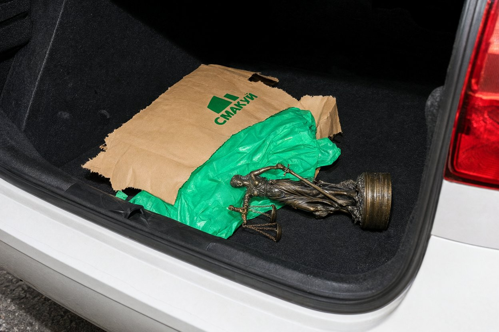
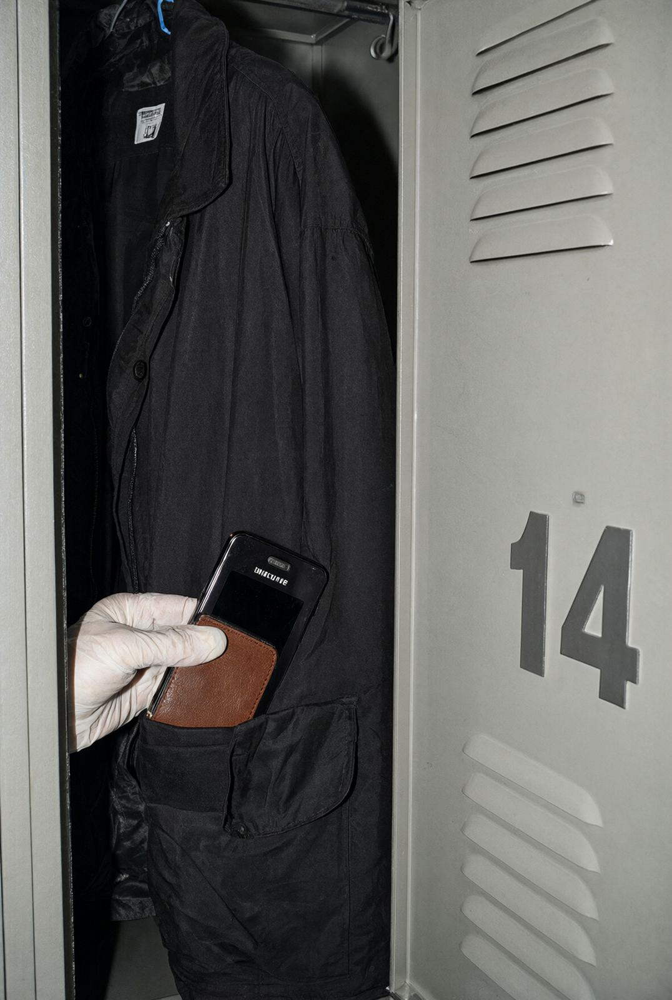
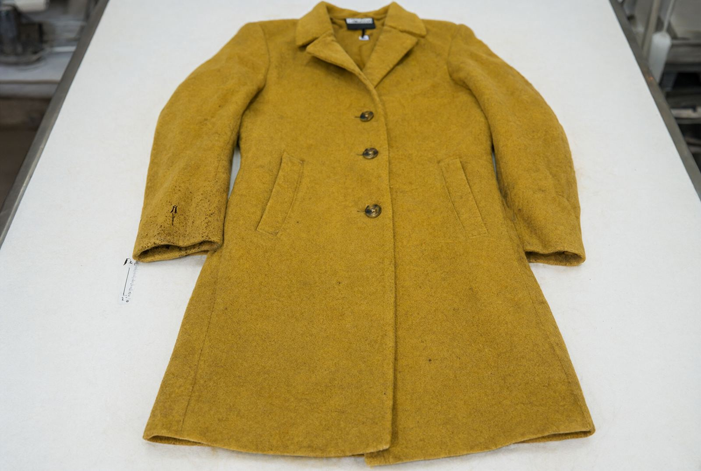

Я, старший слідчий СВ Галицького ВП ГУНП у Львівській області капітан поліції Стасюк Олег Михайлович, за участю спеціаліста-криміналіста Олійника В.В., понятих Ткачука І.В. (паспорт СН 318402) і Мельничук О.Я. (паспорт МК 770113), адвоката Коломийчук Н.Р. (посвідчення № 3287), на підставі ухвали слідчого судді Личаківського районного суду м. Львова від 14.11.2024 (справа № 463/12187/24) провів обшук у таких місцях:
Обшук проводився в присутності власниці (у квартирі та біля автомобіля), в ординаторській — у присутності старшої медсестри лікарні Білик О.В. Гнатів В.О. на обшуку присутня, від підпису протоколу відмовилась, у протоколі зроблено відповідну відмітку.
У багажнику автомобіля виявлено і вилучено паперовий пакет із написом «Смакуй», у якому знаходився предмет, загорнутий в одноразову хірургічну пелюшку. Предмет — бронзова статуетка жінки з зав'язаними очима, з терезами в одній руці і мечем в іншій (фігура Феміди), висотою 31 см. Статуетка стоїть на круглій основі з бортиком; у заглибленні бортика основи виявлено бурі сліди, схожі на засохлу кров. Предмет упаковано, опечатано, вилучено.

У передпокої, у стінній шафі для верхнього одягу, на вішаку знайдено пакет із жіночим пальтом з вовняної тканини гірчичного кольору до колін. На лівому манжеті пальта виявлено дрібні бурі плями, частково замиті (ознаки пральної обробки). Пальто вилучено разом із пакетом.

Шафку відкрито в присутності старшої медсестри Білик О.В. (ключ надано лікарнею). У кишені жіночої куртки, що висить на вішаку, виявлено мобільний телефон Samsung Galaxy S23 у коричневому чохлі. Телефон вимкнений. Телефон вилучено, упаковано, опечатано.

Інших предметів, що мають значення для справи, не виявлено. Відеозйомка обшуку проведена на нагрудну камеру спеціаліста-криміналіста (носій № 2, передано до експертної служби разом із вилученим). Заяв і скарг від учасників не надходило.